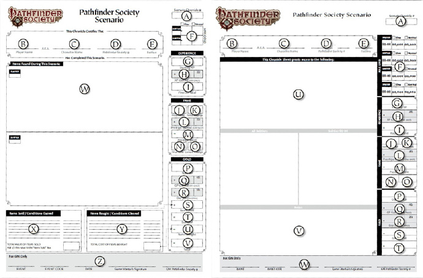

第三章
GM基本规则
作为PFS官方游戏的GM，总体上与平常的游戏时的GM区别不大，但是有一些特殊的注意事项。必须确定你自己熟读第二章：玩家基本守则和附录1：创建角色和附录4：冒险之后。你必须知道你PC的基本情况；他们的期望如何；以及他们的角色是如何构建，怎样运用和如何逐步提升起来的。
什么是GM？
一名GM是游戏的仲裁者和处于玩家所探索世界中所有元素的控制者。GM的职责是营造一个公平和有趣的游戏。在PFS官方游戏中，GM还必须要帮助玩家填写他们所需的文件，确保每名玩家的角色都能拥有准确的记录，同时还需要将每次游戏的结果回报给大型活动的负责人或是官方网站。
谁可以做GM？
任何拥有PFS有效ID号码的玩家均可以运行一个合法的PFS官方游戏。你无需经过任何测试来获取GM资格，同样PFS也没有任何用来评判一名GM或是玩家可以进行点评的评价系统。虽然很多玩家对游戏角色转变为GM都会犹豫不决，但是一旦GM人数的有所增加，区域内的PFS团体和整个战役都会因此而受益。当活动举办者拥有更多可安排的活跃GM，就可以举行拥有很多桌的大型游戏活动(比如模组竞速活动和分组探索活动)。很多时候，玩家在和一个新GM同台游戏的时候，常常会帮助新GM提升技巧和自信，所以不要惧怕躲在帷幕后面给整桌玩家带来一次好的PFS体验。
GM的职责
作为一名PFS官方游戏的GM运行一个游戏需要履行以下职责：
* 和本地的活动组织者合作来计划一个活动让你来作为GM开展游戏。
* 为玩家准备一场冒险，包括准备所有所需要的用具，例如：地图，棋子和参考资料。
* 欢迎每一位前来参加游戏的玩家，并鼓励他们自我介绍(别忘了介绍你自己！)。
* 检查每一个玩家的人物卡和最近的几张记录单来确保准确无误。将任何被发现的严重问题报告给活动组织者让他继续跟进。
* 按照模组内容和规定时间开展游戏。
* 给予每一个玩家一张准确的记录单，来记录他们的冒险所得(填写记录单详见后文)。
* 填写回报单和其他相关的追踪信息并交于活动组织者。
* 如果你即是GM又是活动组织者，确定要提前在paizo.com注册你的活动并及时回报活动结果。
等级和子等级
PFS游戏模组设计为多种等级的玩家可以参与到同一场冒险中。任何模组都会有一个等级范围并且有些还有子等级范围。等级是用来决定哪些等级的玩家可以合法的参与这场冒险。如果玩家角色的等级与冒险的等级不符时，他无法使用此角色来进行这次冒险。
*T1(无子等级)
*T1-2(无子等级，特殊的会有T1和T2子等级)
*T1-5(子等级为1-2和4-5)
*T1-7(第0季至第2季独有，子等级为1-2,3-4和6-7)
*T3-7(子等级为3-4和6-7)
*T5-9(子等级为5-6和8-9)
*T7-11(子等级为7-8和10-11)
*T12+(追寻者内容；子等级为12-13，14-15和16+)
在每个等级中，玩家或预设人物应当应用合适的子等级，除非应为队伍的平均等级导致应用偏高或过低的子等级，将在下方详细说明。在一个子等级多于2个的冒险中，只有相邻子等级范围内的玩家能够一同进行游戏。
决定队伍的平均等级
为了确定一个等级混合队伍使用哪个子等级版本进行游戏，需要计算队伍的平均等级(APL)。
APL=角色等级的总和/角色人数
将所有玩家角色的等级相加再除以角色人数，向最近的整数取整。如果结果是带有0.5的话，有玩家自己决定是向上还是向下取整。
第0季到第3季的标准模组都是为4名玩家设计。在进行这些模组时，如果APL在两个子等级之间，队伍人数为6人或7人的队伍必须向上选择子等级。队伍人数为4人或5人的队伍必须向下选择子等级。
从第四季开始，标准模组为6名玩家设计并且具有对应4人难度的调整。当APL在两个子等级之间(例如在1-5的模组中，APL为3)，一个4人队伍将要使用较低的子等级并不应用任何调整。一个5到7名玩家的队伍，要使用较高的子等级，并应用4人调整。
在特殊情况下，如果队伍中没有任何一名玩家的等级足够达到子等级范围(例如一个有6名3级角色的队伍)，这只队伍可以选择较低的子等级进行游戏。
合法人数
最低的PFS官方游戏合法人数是4人。通常的上限是6人。在不足4人的情况，你可以跟3名玩家一起开始游戏，并使用一个等级合适的预设人物来满足4人的最低要求。合法的预设标志人物是1级，4级，7级人物。
如果有7名玩家出现在一次活动中，与其让某个退出，不如允许7人同时加入游戏。在开始7人游戏之前要征求每位玩家的意见，因为7人团通常来说相较于模组的挑战过于强大了，而且会压缩每一个玩家在模组的表现空间。
绝对不要出现8人或更多人的情况。
0-5季的相关调整
PFS官方游戏在多年来一直在进化。下方的说明会告诉你如何调整#1到#S05-25模组来符合现在的规则。
第0季(标准模组#1至#28)：第0季模组是在PF游戏规则出版之前撰写的。这些标准模组需要GM来进行细微的调整，仅限于要给NPC和怪物增加CMB/CMD数值，并且合并一些技能，例如用隐匿代替潜行和躲藏。如果里面的怪物在之后出现在PF的怪物图鉴中，并且拥有相同的CR，你可以使用新的怪物数据来代替原本的数据。此种情况是唯一在这些标准模组中允许进行的修改。
声望奖励和势力任务：势力任务在这些过去的标准模组中已经不再算作胜利条件。主要和次要胜利条件分别给予玩家1声望奖励，最高可以获得2声望奖励。针对0-2季模组的主要胜利条件覆盖原本的模组目标。3-4季的模组使用模组写在结局处的目标做为主要胜利条件。有关主要和次要胜利条件的详细说明可以前往官网下载说明文档(注：仅限GM查看)
0-2季：前三季战役游戏中只含有5个势力供玩家选择。因此第三季出现的新势力玩家需要做下列调整：
*探索者本部玩家可以将0-2季中奥斯里昂的势力任务视为自己的任务。
*银色十字军玩家可以将0-2季中安多兰的势力任务视为自己的任务。
3-4季：灯笼会和影子会目前已经退役，无法被玩家使用。所以与这些势力有关的势力任务一概忽略即可。
0-5季：在前六季过后，所有国家为基础的势力都被理念为基础的势力所替代。
*秘文会玩家在0-5季中将切利亚斯的势力任务视为自己的任务。
*商盟玩家在0-5季中将卡蒂亚的势力任务视为自己的任务。
*自由尖兵玩家在0-5季中将安多兰的势力任务视为自己的任务。
*圣甲虫贤者会玩家在0-5季中将奥斯里昂的势力任务视为自己的任务。
*君权王庭玩家在0-5季中将塔尔多的势力任务视为自己的任务。
*斯克扎尼势力目前已经退役，忽略此势力在3-5季模组中的势力任务。
慢速升级奖励：慢速升级方式是从第三季开始的。第三季之前的模组慢速升级将是列出的正常奖励的一半(或级外奖励的一半)向下取整。使用慢速升级方式的探索者只能最多获得1声望：满足的每项胜利条件只能获得1/2声望。一些提前印上+1XP的记录单应当被更改为+1/2经验。
级外奖励：级外奖励是从第五季开始的；从那时开始，0-4季的记录单并没有列出级外奖励的和对应半速的数字。级外奖励的数目是高级和低级版本的平均值，半速则再变为一半，向下取整。
额外的可玩内容
在通常的标准模组之外，PFS官方游戏同时还可以使用特许模组和冒险之路的内容。这些额外的游戏内容与通常的PFS标准模组略有不同，在下方说明。
角色：取决于用何种方式进行游戏，只有特定的角色被允许使用。
战役模式：一些特许模组和冒险之路，允许GM使用他们自己的规则来让玩家创建人物，并完成整个冒险(整本书或系列)。奖励可以给予一个合适的PFS人物，如同这些自设人物是预设人物一般。
模组模式：PFS角色是唯一可以进行模组模式的角色。所有的PFS规则都必须照常应用。绝大多数模组的奖励都只能使用合法的PFS角色。
等级合适标准的预设人物可以在模组模式中使用。更高等级的内容需要对应级别的合法PFS才能够参与。
特许内容：每一个特许模组和冒险之路都会发布一个专门的文档来说明玩家可以如何获取奖励，适用于哪种合法角色，以及冒险记录单。这个文档可以前去paizo.com/pathfindersociety/additionalResources页面下载。
时间：PFS特许模组和冒险之路需要很多次游戏来完成。我们鼓励GM能够尽量跟玩家沟通，确保之前缺席1次或多次活动的玩家能够顺利完成游戏拿到记录单。直到拿到记录单为止，这些角色无法在其他的PFS活动中进行游戏。
应用奖励
所有玩家都会获得记录单，除非在GM判定下，他们属于是重玩一个模组或冒险之路，那么并不会得到对应的奖励。
多次冒险和长期冒险
一个PFS只能在一个标准模组、特许模组或冒险之路中进行游戏。角色在获得对应记录单之前，都被视为他们在对应的标准模组，特许模组和冒险之路中进行游戏。GM应当与玩家沟通看看如何完成一个标准模组，特许模组和冒险之路游戏来取得他们的记录单。
桌面上的变数
PFS官方战役游戏的目的是为所有玩家提供一个平衡的游戏经历，而这样做要求所有玩家遵循相同的规则并且所有的GM都被受限于沉闷到难以忍受的剧本。有时一个GM需要做一个有关飞行的裁决，处理一些玩家的意外选择，或者调整帷幕两侧不幸的(或幸运的)骰子都在我们可以理解的范围。
标准模组意味着必须按照模组所写的运行(Run As
Written)，不能够增加或减少怪物的数量(除非写明在模组中的调整)，或者改变护甲，专长，物品，技能，法术，数据，能力或武器。如果玩家的行动在遭遇开始之前或是中途使得预设战术以及起始位置无法生效，GM应当根据情况进行调整使得游戏可以带来更好的体验。
作为PFS官方游戏的GM，你有权利和责任在规则范围内进行裁决，来确保在你的游戏中，每个人都能拥有公平和有趣的游戏体验。这并不意味着你可以反驳或限制列于本文档、公开出版的PFRPG资源，勘误文档或官方FAQ所列出的规则和说明。这只是说如果遇到的情况并不在涵盖在这些资源中时，你拥有仲裁的权利。
此外，如果模组中列出的一些为了增加趣味的环境和地形因素时并没有在遭遇中列出与之相关联的核心规则书中的硬性数据，那么又GM自行处理。我们总是鼓励GM在决定NPC的反应和一些游戏中的结果时，奖励那些积极扮演的玩家。GM可以使用一些其他PFRPG的合法资源来为模组增添趣味性，但是不要更改遭遇的硬性数据。特说说明一下，遭遇的硬性数据包括出现的生物，遭遇中敌人的数量和这些敌人在数据栏中的数据。如果一个遭遇是陷阱、作祟或技能检定来通过某些情况，那么这些列出的DC和结果不能被改变，它们也算作遭遇的硬性数据。此外，如果一个遭遇已经包括地形、天气或险境的数据，请注意这些也算遭遇的硬性数据，不能进行改变。PFS的GM无法在公开游戏活动中禁止合法的角色选项。
如果某些特别的情况经常性的出现在你的游戏中，请将此问题在官网paizo.com/pathfindersociety的PFS讨论版进行反映。工作人员会为你解答并避免在将来继续产生困惑。不论花费了多少时间来说明这些问题，总是会有更多的情况出现需要GM来裁决。下面列出的一些说明是一些常见的情况如何处理，你应当在开始一场PFS官方游戏之前确认清楚。
创造性的解决办法
有时候在模组中，玩家有可能会用一些创造性的办法来解决遭遇(或者整个模组)让你大吃一惊，因为你对结果毫无准备，也并没有包含在模组中。如果，举例而言，你的玩家打算以他们人物的扮演方式来通过一场战斗遭遇，并且成功的达到了目的而并没有杀死对手，那么请给予玩家如同击败对手相同的奖励。如果在模组中特别提到要杀掉对手才能获得一些物品或金币，那么可以用玩家找到一个宝箱装满金币作为代替(或者类似的东西)来给予相同的奖励。此外，如果玩家因为创造性的解决了一个通常需要战斗的遭遇，而错过了一个带有特殊卷轴或药水的NPC，不要将此物品从记录单上划去――取而代之的是，将此物品放置在一个其他地方让玩家来发现。
PFS官方游戏从来都不希望，解决问题的唯一途径就是杀死敌人这种印象出现。奖励创造性的使用技能和优秀的角色扮演并不仅仅能让PFS官方游戏更加有趣，还给了GM一定的操作空间来对确保玩家能够得到他们的奖励。
如果你的玩家意外的或是故意的杀掉一个重要NPC，而他携带着让冒险能够继续的重要情报怎么办呢？这对GM是一个棘手的问题，并且还需要一定的即兴创作能力。不要在一个老头和携带的信件一起被魔法火焰生生吞噬之后，就决定冒险结束了。假定这个信件在什么神奇的力量下幸存了(比如放在一个防火的口袋里)或可能这个老头有一个随从就在附近，他也知道相关的内容。即兴创作能够保证你的模组能够继续进行并且帮准解决一些不可预料的事情。
阵营偏斜
玩家对他们角色的行为负有责任。“这就是我的角色应该做的”并不能为表现得像个混蛋来辩护。
阵营偏斜是一个敏感话题。杀死一个无辜的人，肆意破坏和其他邪恶的举动都会有可能导致阵营偏斜。基本上，在你的桌上你拥有最终裁决权，但是你必须警告他正在进行你会判处偏离阵营的行为。这个警告必须明确，你必须确认他明白你警告他的意思和针对的是哪个行为。这名玩家应当有机会修正他的行为，为他的行为说明辩护或是承担其后果。我们相信神�o会原谅一时的错误选择，只要这个行为不是过分的令人发指(比如烧毁一个满是孩子的孤儿院，毫无缘由的杀死一个农夫只为了取乐，等等)。因此，你可以让玩家通过一种“感觉”接收到他神�o所传达的警告，一个神赐的预示，他的良心正在与他交谈，或是其他类似的角色扮演事件，来接收警告。
如果仍然继续这种作为，在标准模组或特许模组或冒险之路中，阵营都会按照规则进行改变。如果你认为这些行动有充足的理由改变阵营，那么你应当将其记录在这名角色的记录单上，并在冒险结束时，角色可以通过赎罪术来清除这一状态。如果效果被移除，也一样要在记录单上注明。(要写明是阵营偏斜导致需要赎罪术，以及已经被解除)
一个频繁肆意进行毫无理由或挑衅式邪恶举动的玩家，将从战役中退役。这达到了使用最后手段的标准；一个阵营绝对有不止一种的表现方法。
如果一名角色由于上述情况变为邪恶阵营，你必须上报活动组织者，或本地冒险队长或副队长。如果他们也同意你的观点，那么这名角色就变为邪恶移除本战役。再次声明，这种方法将是最后的手段。
在活动中变为邪恶的角色，回报他“死亡”，回报活动的人需要勾选对应的方格。如果活动组织者，冒险队长或副队长认为这名角色符合判定邪恶的标准，他应当向总队长发送邮件说明情况，包括玩家的姓名，PFS的ID号码，角色的号码和邮箱地址。他也应当向这名玩家告知这一决定，并提供总队长的邮箱地址，这样此玩家可以对这一情况进行申诉。
处理死亡
在角色成为探索者协会探员的那一刻就主动要面对危险，角色死亡是非常有可能的事情(也是一件必要的事情来保持游戏里遭遇的危险性)。不过也要考虑到，对第一次加入PFS甚至第一次接触PF的新玩家，在第一次游戏中就让他们的角色经历恐怖的死亡有可能会让他们对战役和这个游戏产生阴影。虽然我们并不建议修改骰子，但是可以在玩家使用某些非常致命的战术或是将自己置于极端危险的境地时，让他们重新考虑，尤其是对于新手玩家。绝大多数新手第一次游戏的结果是人物死亡的话，都不会再回到战役中来。
于此类似，如果整个队伍都被杀死并且无法复活，那么就等于派对提前结束了。这些玩家在大会的下一场游戏开始之前可能就没有能玩的东西了。明显，我们希望这种全队死亡的事件(TPK)不会发生(并且尽量调整标准模组的平衡性来确保这一点)――但是有时候骰子就是不站在你这一边，把所有人都送去伟大彼岸。
记录单和保存记录
不论你在集会或者家中参与PFS官方战役游戏，你作为GM的重要责任――除了给PC带来公平有趣的游戏体验之外――就是认真填写每次游戏的记录单。
记录单上记录了PFS人物所有重要的信息，并作为一种官方文件可以使该PFS人物能够在全世界任何地方举行的活动中参与游戏。记录单同样可以一定程度上防止少见的不道德作弊行为。
在你为你的PC开展PFS官方游戏时，有3样重要的东西，必须认真记录追踪：声望点数，财产和异常状态。
记录声望点数非常的简单，只需要你提前阅读清楚模组的胜利条件，然后记录玩家是否完成冒险中的相关任务。特殊的是要注意不同季度的模组胜利条件可能会发生变化，详细参见上方的“0-5季的相关调整”。
当你在游戏开始前查看玩家的角色人物卡和记录单时，如果你发现任何不对劲的地方，你可以询问这名玩家来向你解释。如果你相信这名玩家作弊了，请立刻联系活动组织者来裁决。
如果你即是游戏组织者又是GM，那么将由你来决定如何发展，我们再三期望你能够冷静，友好并心胸宽广的来处理这件事情。这名玩家很可能只是无心的错误或者也有可能是记录单或人物卡的内容让你产生了误解。记住这个游戏是用来提供乐趣的，所以尽量少浪费时间在别的地方，让时间更多的用于提供刺激和内容丰富的冒险上。
如果你发现在记录单或是人物卡上有错误存在，尽可能的公平解决，例如让角色支付应当支付的金钱，用重训规则来更改专长或不合法的法术。
如果你不确定应当怎样解决这个问题，请联系活动组织者，冒险队长或副队长。
如果你确信这名玩家是作弊，请他离桌并发送邮件给PFS的员工，陈述所有你记得的相关内容――尤其重要的是，上报这名有问题玩家的PFS官方游戏ID号。
填写记录单
在冒险结束之后，根据下面的10个步骤来填写冒险记录单。下面左边为0-4季的冒险记录单样式，右边为5-8季冒险记录单样式。在填写记录单时请使用钢笔或圆珠笔，确保清楚明确的填写。

第一步：给每位玩家分发一张冒险记录单，让他们填写A到G、J、K和P(角色冒险记录单编号、升级速率、玩家姓名、起始经验金钱声望等相关信息)。当他们填写与上一张记录单上所示相同的信息之后，将这些记录单收回。
第二步：注意下玩家勾选的升级速度(项目F)是否和原来匹配，尤其是在升级时的玩家。如果他的起始经验值(项目G)是3的倍数，选择的升级速度如果与之前一张记录单不同，那么你需要询问一下玩家是否确实要更改升级速度。
第三步：根据升级速率填写角色获得的经验值。玩家只有在冒险中存活或复活(至少完成三场遭遇)才能获得经验值。标准升级速度获得1点经验值，慢速则是1/2经验。将数值填写在深色的“XP
Gained”格子内，并在后面的空格里签字(项目H)。
第四步：根据模组进行情况决定玩家获得多少声望点数。一个玩家通常会获得至多2点声望：每完成一个任务获得1点声望。慢速升级玩家则至多获得1点声望。将对应数值填入深色的“Prestige
Gained”格子内，并在后面的空格里签字(项目L)。
第五步：根据玩家对应的升级速度和模组子等级决定获得的最大金币数。圈选出对应数值(项目F)。如果玩家等级不属于模组子等级范围(例如1级2级和3级玩家玩的是4-5级版本)，圈选级外(Out-of-Subtier)奖励金币数值，对于0-4季的记录单GM需要自行计算级外奖励(两个子等级奖励相加除以2)写在一旁，并圈选。此数值代表了玩家完成在冒险中击败的敌人和找到的物品价值的金币数。如果玩家使用的是非1级预设人物，它可以选择将此记录单附于一名1级角色，但要将总金币数值降低到500GP(慢速250GP)。如果玩家没有在游戏中获得某项遭遇奖励(模组中一般会有列出)，则从总金币数值(项目F)中将其扣除，如果最后的结果是负数则用0来代替。将最终结果写于深色的“GP
Gained”栏目，并在后面的空格内签字(项目Q)。
第六步：让有需要的PC进行日常工作检定，然后将结果写入深色的“Day
Job”栏目，并在后面的空格内签字(项目R)
第七步：将任何玩家没有在冒险中找到的物品划掉，标记(勾选)玩家得到或是没得到(划掉)的特殊福利(项目U，旧版是项目W)。此外如果你运行的是低子等级版本的模组，请将高等级版本的物品奖励表划掉。然后将记录表交还给玩家。
第八步：让玩家填写任何他购置或卖出的东西，以及法术服务花费等项目，在对应的栏目中(项目V，旧版是X和Y)。如果玩家身上带有持续状态，例如诅咒或疾病，应当也写在这一位置。见处理负面状态章节中对此项的详细要求。此外，玩家也应当列出任何他角色花费声望点获得的好处。有时玩家还需要你来见证他将一些卷轴成功抄写入魔法书的投骰或是训练动物伙伴的新技能。在这些由你见证的结果后面签字。任何高于25GP的物品买卖都需要额外记录在玩家的物品追踪表内，并标记上交易记录所在的冒险记录单号(项目A)。
第九步：让玩家完成右手边表格中的相关计算(项目I、M-0和S-T，旧版是S-V)。
第十步：重新检查一遍冒险记录单然后检查玩家的计算。确定玩家获得与花费记录准确。你的仔细检查可以防止将来的记录单出现连锁性错误。一旦你确认了记录单上的所有内容，在下方的表格中签字(项目W，旧版是项目Z)。关于“Event”(活动)这一栏目，请填写活动的名称――如果是家庭游戏或是在游戏店(桌游吧)进行就填写“home
game”或游戏店(桌游吧)的名字。如果是在大型游戏集会，则填写集会的名称和日期。关于“Event
Code”栏目填写你在官网注册活动时获得的活动号码，或是询问游戏组织者获得。这也是你需要提前在官网注册活动的原因(不注册没有活动号码)。
解决异常状态
在冒险结束时，一个玩家可能身中若干种负面状态，例如目盲、诅咒、耳聋、疾病或毒素。注意核实玩家是否有认真将这些状态记录在他们的记录单上，并在所写记录项目后面签字(见下文)。非常重要的事情是要字迹工整清楚，确保玩家和之后的GM能够明白所写的内容。
如果玩家购买施法服务来清除状态，你需要确保玩家将这些花费记录在了记录单下面的对应位置。如果其他玩家使用魔法来协助这名玩家清除状态，也需要被记录下来，并注明施法玩家的ID号码和使用的法术名称。如果在这次冒险过程中，玩家清除了一个之前冒险中获得的不良状态，那么要确保在记录单上写明此状态已备清除，并且要认真记录所有解除状态的花费。
注意：任何会导致角色变为无法使用的状态，都必须在游戏结束时被清楚，详细说明见本书第五章。
回报冒险结果
一旦你完成了冒险并且为所有人都填写了记录单，那么必须有人来回报这次冒险的结果。在家庭游戏中，GM总是有责任来回报结果。在集会活动或游戏店时，活动的组织者(有可能也是一个GM)会承担回报结果的责任。
不论你是在家中还是在集会上开展游戏，你都应该用冒险结果追踪单来记录每一场冒险。你可以在paizo.com/pathfindersociety/myAccount的GM/Event
Coordinator分栏里找到这个冒险结果追踪单你需要检查玩家的完整记录单，记录下来每一个玩家的PFS游戏ID，角色姓名，势力和在冒险中所获得的声望点数。
在冒险结束之后，登陆官网在GM/Event
Coordinator分栏里点击“Report”。小心的按照里面的步骤来填写所有追踪表上的信息。你会发现，我们所追踪的信息，远比玩家记录单上的要少的多――这是故意而为之。
从第五季开始，绝大多数模组最后都会有一个回报说明。要求GM在回报时勾选更多的项目(A,B,C,D)，这些项目基于玩家在模组中的选择，这些选择将左右战役的发展方向。所以要确保这些方格被正确勾选。
游戏店或集会的游戏组织者通常有责任回报冒险的结果。在冒险结束后，GM只需要填写好冒险结果追踪单然后交给组织者即可。游戏组织者将在活动结束之后完成回报。在游戏店或小型集会上的组织者通常也是一名GM。不论你在何时何地进行游戏，都不要忘记回报结果――回报是PFS重要的组成部分。
GM奖励
在PFS官方游戏中，我们奖励自愿花费时间来开展游戏的GM。从本指南的2.2版本开始(并不追溯到之前开展的游戏)，任何GM在运行一个模组之后，都会获得该模组的全部奖励应用在他的一个角色身上。GM同时还会获得基于他运行和回报的游戏数目产生的相应奖励(见GM星级奖励)。
“全部奖励”意思是GM获得下列奖励：1经验值，符合GM角色等级的全数金钱和2声望(半速的话，相应减半)。特许模组和冒险之路，全部奖励是3XP和4声望(Free
Day特许模组则是1XP和1声望)。
GM可以获得任何记录单上的特殊福利，例如奖励免费的魔法物品，地区性的福利或掷骰的加值福利等。如果该福利对应特殊势力，只有获得奖励的角色属于该势力，才能获取。GM应用奖励的角色不会获得休整期。
GM角色获得哪个子等级的奖励由该角色的等级来决定。如果GM将一个T1-5的模组奖励应用在一个1级盗贼角色身上，那么会获得T1-2的奖励，盗贼获得对应等级的记录单。即使这个T1-5模组他运行的是T4-5版本，也同样获得T1-2的奖励记录单。
如果GM应用奖励的角色等级在子等级之间，那么必须获得级外奖励的金钱，而物品列表等额外奖励则获得他运行版本的对应奖励。
如果GM运行了一个较高等级的模组，并不包含他应用奖励角色等级那么低的子等级，他获得最低子等级的奖励，并暂时为这名角色持有这张记录单。然后，一旦这名角色提升到记录单上的最低等级，那么此记录单会被立即应用。举例来说，如果GM运行了一个T5-9的模组，并将奖励给予一个1级盗贼，他获得T5-6的奖励(此模组最低版本的奖励)并将其暂时放置在一边。一旦他的盗贼提升至5级，她便要立刻将记录单应用在这个角色身上。这也意味着GM的角色有可能连续升级。
GM需要和玩家一样指定将运行模组的奖励给予哪个角色，并且必须遵照和玩家一样的规则应用记录单。当你获得一个GM单奖励时，你必须决定哪个角色获得这个奖励，并且将其填写在冒险结果追踪单上。你必须按照获取顺序来应用所获得的记录单(如果等级相同的话)。
GM星级奖励
PFS官方战役游戏提供了GM等级系统。此系统使用星级来标识一名GM的活跃度和经验。这个星级将会显示在你的PFS的ID卡上。你可以通过开展和回报活动提升至4星。
*拥有10场冒险作为GM的回报=1星
*拥有30场冒险作为GM的回报=2星
*拥有60场冒险作为GM的回报=3星
*拥有100场冒险作为GM的回报=4星
想要提升至5星，你必须满足下列条件：
*拥有150场冒险作为GM的回报
*运行了50种不同的冒险
*运行了10次或更多特殊或独有冒险
*运行一次有PFS领导团队代表或冒险队长在场观摩的冒险。在这次冒险中，这些代表将会评估你的规则知识，即兴发挥能力和为PFS玩家提供公平有趣的冒险体验的水平，之后来决定是否给予你5星的评价。
Paizo会在PaizoCon和Gen
Con中声明和宣布所有5星GM的名字。此外还会有特别针对4星和5星GM的奖励，例如特殊冒险模组。
所有GM都会根据他们的星级获得下列奖励。
*在免费重投的时候获得(见下方免费重投)等同于GM星级的加值。
*每一颗星都可以选择一个无法再次获得奖励的模组重复获得一次奖励(见上文重玩冒险)。
*获得特殊基于GM星级的奖励记录单应用在1个角色上，可以从paizo.com/pathfindersociety免费下载该记录单。